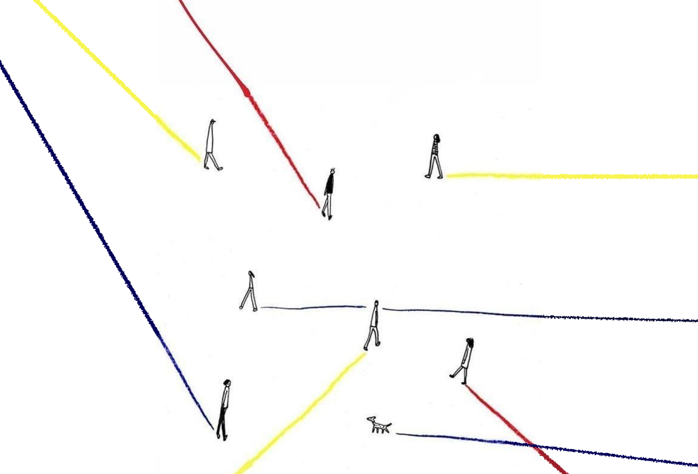
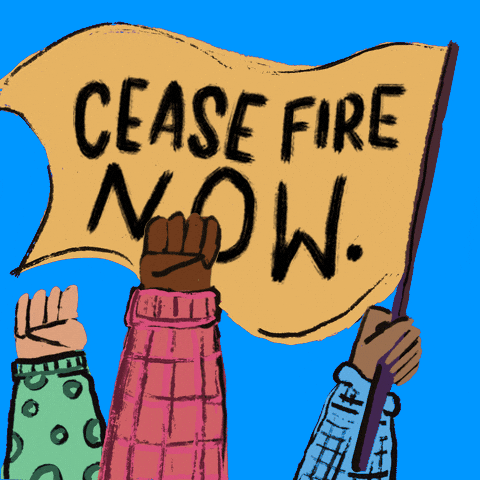
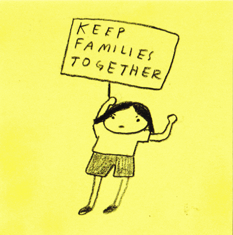
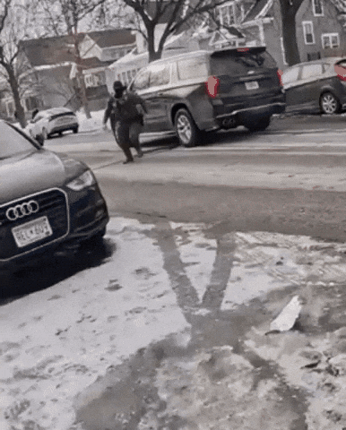
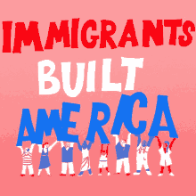
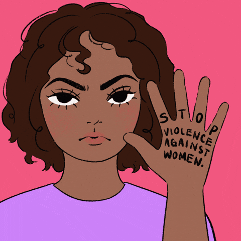

Hello! My name is Olivia Dien and welcome to my IML 300 project, "HUMAN FIRST". Amidst the current political climate, I've chosen to create a project that showcases the contributions/experiences of certain communities of color through poetry. After reading the poetry, there is a section for each community with a couple of organizations to encourage people to get involved and uplift others. This project was made for individuals who belong or care about communities of color. During the current administration, I have noticed an increasing amount of indifferent/cruel attitudes towards the ICE raids, deportations, and wars as well as a general increase in racism. My goal for this project was to encourage empathy between and within these communities and act as a reminder that we are all human first before race, gender, sexual orientation, etc. Many of the windows of this website are draggable (including this one!) and you can navigate through the pages using hyper-text links. To begin, click on one of the people walking on a path.




